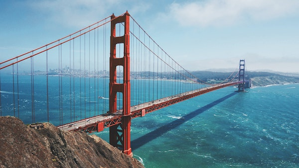
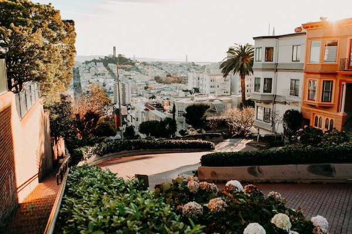
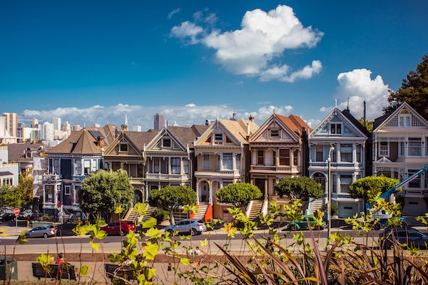

Stunning panoramic shot of the Golden Gate Bridge, looking across the bay towards San Francisco.
Lombard Street

Take from the top of the world famous Lombard Street, known for its amazing winding road with Coit Tower in the distant background.
The Painted ladies

The beautiful Painted Ladies, a row of Victorian and Edwardian style houses located across from Alamo Square park. A must visit location for all visitors.
MMU Logo
We can also make an image into a link by wrapping the anchor tag around an image. For example using the MMU logo to go to the MMU homepage.